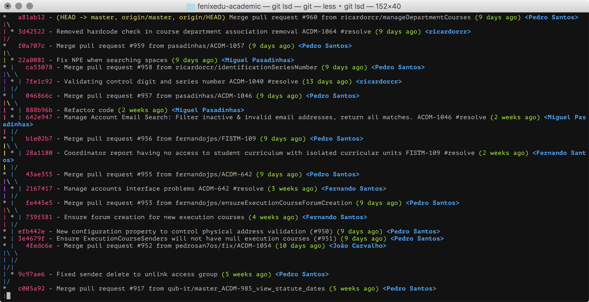
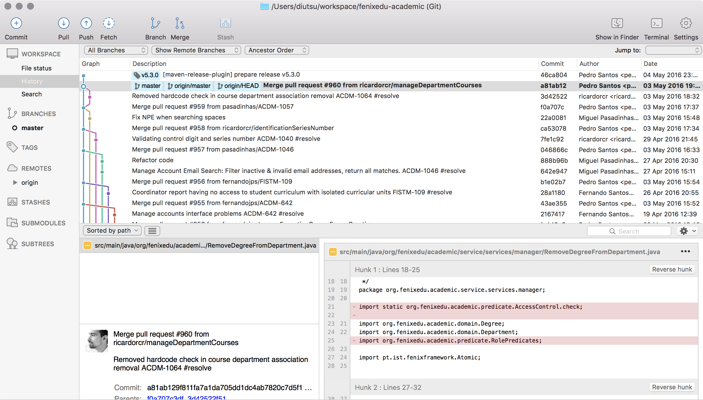
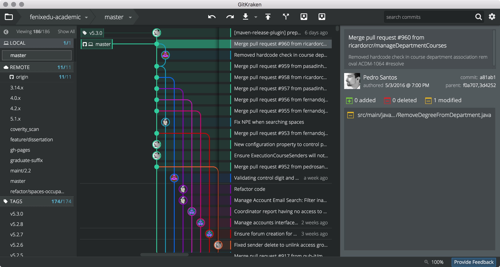

Git & Github
like a sir
Created by Gonçalo Sousa Github.com/diutsu
git
“Git is a free and open source distributed version control system designed to handle everything from small to very large projects with speed and efficiency.”
“Git is easy to learn and has a tiny footprint with lightning fast performance. It outclasses SCM tools like Subversion, CVS, Perforce, and ClearCase with features like cheap local branching, convenient staging areas, and multiple workflows.
“Git /ɡɪt/ is a distributed revision control and source code management (SCM) system with an emphasis on speed. Git was initially designed and developed by Linus Torvalds for Linux kernel development in 2005.”
Controlo de versões
Gestão das alterações a documentos, código ou outros tipos de informação.
Identificadas por número ou código, e associado um timestamp e responsável.
First and Foremost
Usar em todos os projectos mesmo que o estejas a fazer sozinho
O que meter no git?
java, matlab, 3D printing, LaTeX...
e todos os ficheiros de texto dos vossso projectos
... mas também podem colocar ficheiros binários
Vantagens
- backups
- sincronização
- desfazer alterações
- seguir as mudanças
- quem fez o quê
- branches e merges
- ambientes isolados
Repositórios de Git

Primeiro passo: instalar o git
# Debian/Ubuntu
apt-get install git-all
# Debian/Ubuntu
apt-get install git-all
# ArchLinux
pacman -S git gitk
# Gentoo
emerge --ask --verbose dev-vcs/git
# Fedora 21 / Red-hat
yum install git-all
# Fedora 22+
dnf install git
# OpenSUSE
zypper install git
# FreeBSD
cd /usr/ports/devel/git
make install
# Solaris 11 Express
pkg install developer/versioning/git
# OpenBSD
pkg_add git
OS X / Windows
install Linux
Não há interfaces gráficas?
Para quê?
Não há interfaces gráficas?
Há, é só escolher:
http://git-scm.com/downloads/guisPessoalmente CLI + gitk + meld
SourceTree 
GitKraken 
Não posso usar isso num IDE?
Claro que sim!
https://www.eclipse.org/eGit/
https://sublimegit.net/
...
Ready?
Usando git
Criar um repositório
Criar uma nova pasta "gitWS"
Abrir a pasta num terminal
git bash no Windows
git initInitialized empty Git repository in /home/diutsu/gitWS/.gitProTip#1
Sempre que quiserem saber o estado do vosso repositório
git status# On branch master
#
# Initial commit
#
nothing to commit (create/copy files and use "git add" to track)
Adicionar ficheiros
Criar um ficheiro readme.md com
#git repository
## This is my first file on this repository
I should describe this project here.
git statusOn branch master
Initial commit
Untracked files:
(use "git add <file>..." to include in what will be committed)
readme.md
nothing added to commit but untracked files present (use "git add" to track)ProTip#2

Adicionar ficheiros ao repositório
git add readme.mdOn branch master
Initial commit
Changes to be committed:
(use "git rm --cached <file>..." to unstage)
new file: readme.md
Fazer commit
git commitAdiciona a tua mensagem de commit
[master (root-commit) eaee897] My first commit
1 file changed, 3 insertions(+)
create mode 100644 readme.
The über fast way
Lets write another line on readme.md
git commit -a -m "Your commit message"History is a Weapon
You can always check your repository history
git logPretty tip
try out these git log
git log --pgit log --onelinegit log --abbrev-commitgit log --date=relative --pretty=format:"%h - %an, %ar : %s"So you said Git has good branching ...
git branch alpha
git checkout alpha ou com açúcar
git checkout -b alphaHow many branches are there?
git branch -vvChanges on new branch
Escrevam uma nova linha no readme.md
git commit -am "This is a test feature"Back to master and merge
git checkout masterVejam que o ficheiro está igual ao que estava antes de mudarem de branch
git merge alphaUpdating 452941e..8da4cb8
Fast-forward
readme.md | 2 ++
1 file changed, 2 insertions(+)
Profit!
Not everything is this smooth
git checkout masterAlterem uma linha no readme
git commit -am "There was a bug, temporary fix"Not everything goes smoothly
git checkout alphaAlterem a mesma linha do readme, para outra coisa
git commit -am "This feature is complete now"When merge fails
git checkout mastergit merge alphaAuto-merging readme.md
CONFLICT (content): Merge conflict in readme.md
Automatic merge failed; fix conflicts and then commit the result.
We have to fix these conflits first before we can commit the merge
Merge first-aid
<<<<<<< HEAD
But this description can be altered
=======
This project is my first experience with git scm.
This description can be changed.
And so it begun
>>>>>>> alpha
HEAD é um alias para o commit/branch actual
Depois do "======" estão as alterações a que estão fazer merge
git commit -m "merged fix for previous problem"Merge tips
git mergetoolopens your prefered diff editor
Tired of this CLI stuff?
Lets see some pretty interfaces
SourceTree
Live merging demo
Remotes
É um repositório noutro pc
Pode estar no pc do teu colega, Github, ou outro servidor
Repositório do projecto para que estás a contribuir - upstream
Podes ter vários remotes simultaneamente
Remotes

Github

Github
Quem ainda não tiver, criar uma conta.
Criar um novo repositório, vazio
Adicionar este remote ao nosso repositório
git remote add origin git@github.com:diutsu/gitWS.gitgit push -u origin masterBranches
Reparem que nas branches do github não está lá a branch alpha
Há que fazer push de todas as branches individualmente
git push origin alphaPull allways get all branches
git pullForks
Cópias de outros repositórios
Parte do esquema de pull-request do github
Remote para os repositórios do vosso PC
http://github.com/diutsu/Qt-CalculatorGive back, get street cred
Podes submeter as tuas alterações para o upstream
Pull request
Pull Request
É o workflow standard para o github
Cada contribuidor tem um fork do repositório
Desenvolvem contra o seu repositório
Assim que tiverem a tarefa completa criam um pull request
Pull Request

Update your fork
git remote add upstream git@github.com:diutsu/Qt-Calculator.gitgit fetch upstreamgit checkout mastergit merge upstream/mastergit push originI feel lonely
Adiciona contribuidores ao teu projecto no github
Para projectos em servidores privados, basta que tenhas acesso ao servidor
Já agora, é de referir que o git diferencia quem faz o commit e quem faz o push/merge
Students rejoice
repositórios privados ilimitados gratuítos no Github
Github has a few treasures
Issues, wiki, github-pages, gists
Adding Files, and bad things
Adicionem um novo ficheiro
git commit -a -m "Your commit message"git pushA few minutes later...
"Oh Zé não está lá nada!"
git statusUps e agora?
Change your commit, and why you should not do that
git add newFile.txtgit commit --ammendThis is a new commit, replacing the old one.
git pushDO NOT ammend, or rebase, public code
git push -fOther git workflows
A centralized repository
É o método mais parecido com o SVN
O pull é feito sempre com rebase, para manter a história linear
git pull --rebaseCaso hajam conflitos, resolvem-se, faz-se add e continua-se
git rebase --continueou aborta-se
git rebase --abortA centralized repository

Feature branch
Desenvolves cada feature numa branch à parte.
Assim que estiver completa, e revista, faz-se merge para a master
Feature branch
Gitflow
Muito parecido ao feature branch
Acrescenta algumas branches com significado especial
master - apenas o código na release oficial, develop - código em desenvolvimento release - em preparação para uma release hotfix - para correcção de bugs na master
Gitflow

F I M
Reve os slides aqui: diutsu.net/git ou faz clone e fork do repositório
git clone https://github.com/diutsu/git-workshop